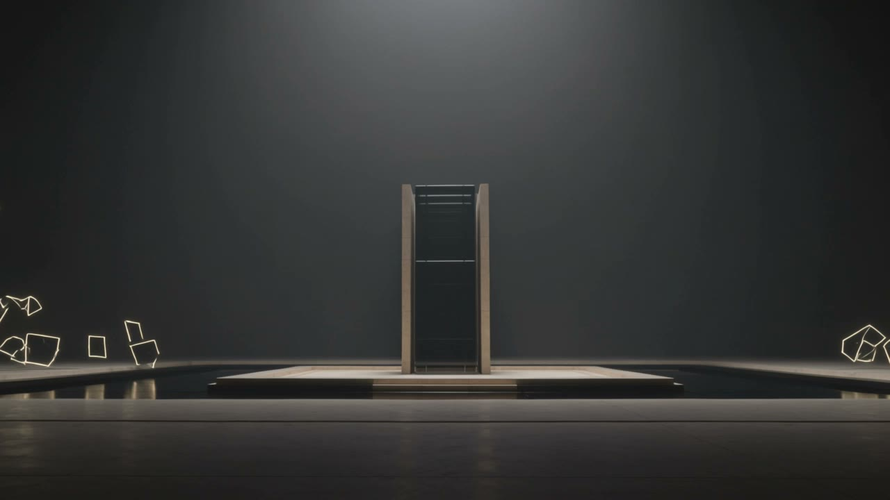
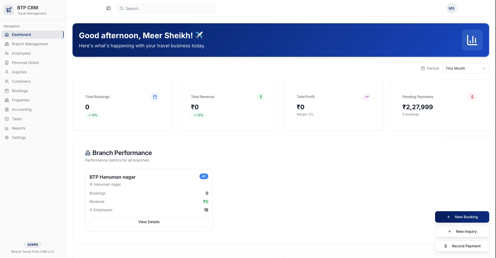
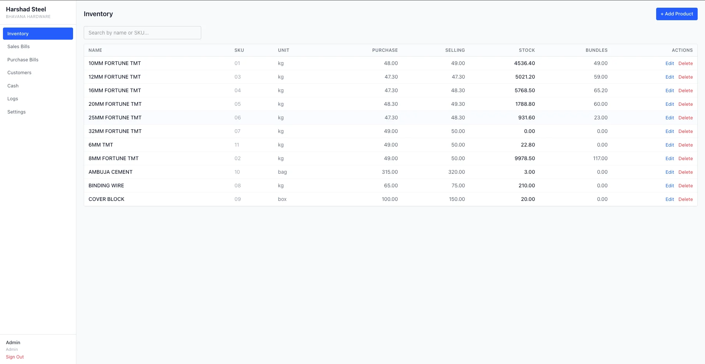
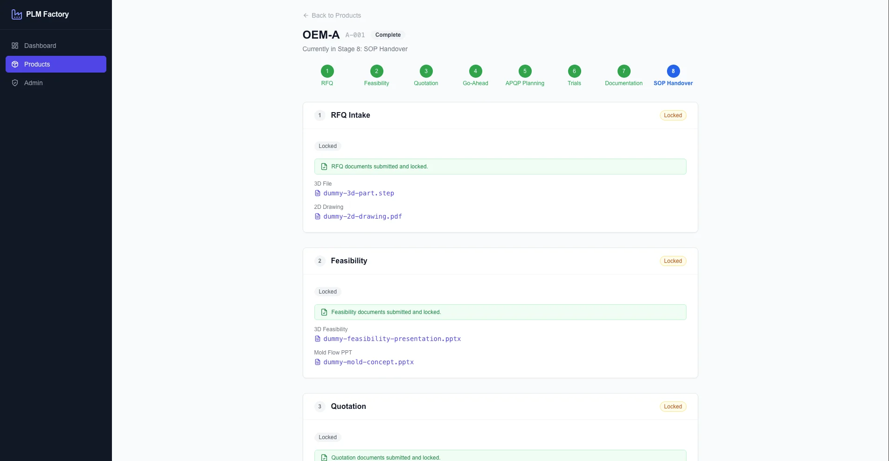

Support with context
Answer recurring questions from approved sources, with a clear path to a person.
Loading the cinematic preview…

Systems 2026
Avantage AI — The Connected Systems Edition
Your business already has the moving parts. We make them work as one.
Business runs better by design.
01 / AI Agents
Connect customer support, lead qualification, research, and reporting around your business context.
Give each agent a clear role, shared knowledge and a route back to your team.
Answer recurring questions from approved sources, with a clear path to a person.
Gather the details your sales team needs before the first conversation.
Help teams find policies, process notes and useful answers in one place.
A customer asks about an order. An agent checks approved information, drafts a reply and sends an exception to the account owner with the conversation attached.
Plan your AI team ↗02 / Automations
Bring lead capture, qualification, CRM updates, follow-up, and reporting into one connected workflow.
A connected path replaces the copy, paste and chase between separate tools.
Pass the right information between the systems your team already uses.
Trigger reminders and next steps from real changes in the workflow.
Assign work, surface exceptions and keep a traceable record of what happened.
A website enquiry becomes a qualified CRM record. The right owner receives the next action, while incomplete requests wait for review and the team receives a progress summary.
Map your first workflow ↗03 / Custom Software
Design operations dashboards, client portals, and internal tools around how your team works.
A shared foundation connects your operations team, customers and decision makers.
New service requestOwner / Operations
Prepare delivery briefOwner / Project team
Client approvalOwner / Account lead
Bring priorities, work queues and ownership into a view your team can act on.
Give customers a clear place to share information, review work and follow progress.
Replace awkward workarounds with purpose-built screens and connected analytics.
A services team manages delivery on an internal board. Customers see the relevant milestones in their portal and send approvals back to the same project record.
Shape your software brief ↗04 / Data & Insights
Connect your information sources to custom reporting, live dashboards, and automated business summaries.
Bring separate records into a reporting layer with shared definitions and visible gaps.
Define measures around your business and trace them to the underlying information.
Keep the team aligned with useful views and clear signals when a source is out of date.
Explore assumptions, see uncertainty and receive a concise account of what changed.
Before the weekly review, a manager receives a summary across sales and delivery. Each item links to its source, and missing inputs are flagged for the team to resolve.
Connect your business picture ↗05 / Creative AI
Bring image, video, campaign content, and brand assets into a repeatable production workflow.
Keep the brief, visual direction and review process connected from first concept to final asset.
Develop a consistent visual direction across product imagery, motion and campaign stories.
Turn an approved brief into coordinated assets for each channel and audience.
Build reusable direction, review steps and organised deliverables for the next campaign.
A product launch begins with one approved direction. The studio develops image concepts, a short film and channel variations, then brings the team together for review before delivery.
Plan your creative system ↗The connected difference
See how a fragmented operating model can become connected business work.
Drag or use the arrow keys to move the diagram reveal. The complete before and after comparison stays below.
06 / Our Work
Explore Avantage systems for travel, steel operations, and manufacturing.

Work / 01 · Travel
Inquiries, bookings and accounting in one travel system.
Explore the system ↗Project page →
Work / 02 · Steel & hardware
Inventory, billing and cash across the operation.
Explore the system ↗Project page →
Work / 03 · Manufacturing
A digital lifecycle from RFQ to SOP handover.
Explore the system ↗Project page →Bharat Travel Point / CRM & accounting
Inquiries, bookings, customers, branches and payments need to be managed together.
A custom travel CRM and accounting system for Bharat Travel Point, including marketing channel performance.
One system unifying inquiries, bookings, customers, branches, payments and marketing channel performance.
Harshad Steel / Bhavana Hardware · ERP
Inventory, sales bills, purchase bills and cash are part of the same steel and hardware operation.
A custom ERP for Harshad Steel / Bhavana Hardware covering stock, billing, customers and suppliers.
Inventory, sales bills, purchase bills, cash, customers and suppliers covered by one ERP, with roles and audit logs.
VRC Plasto Mould / Manufacturing PLM
Plastic parts manufacturing moves through RFQ, feasibility, quotation, APQP, trials, PPAP and SOP handover.
A product lifecycle management system for VRC Plasto Mould covering those manufacturing stages.
The product lifecycle digitised from RFQ through feasibility, quotation, APQP, trials and PPAP to SOP handover.
Your next system
Start with the work that matters to your business.
BOOK A FREE STRATEGY CALL
Tell us where you want to take your business. Let’s find the right place to start.
YOUR NEXT CHAPTER